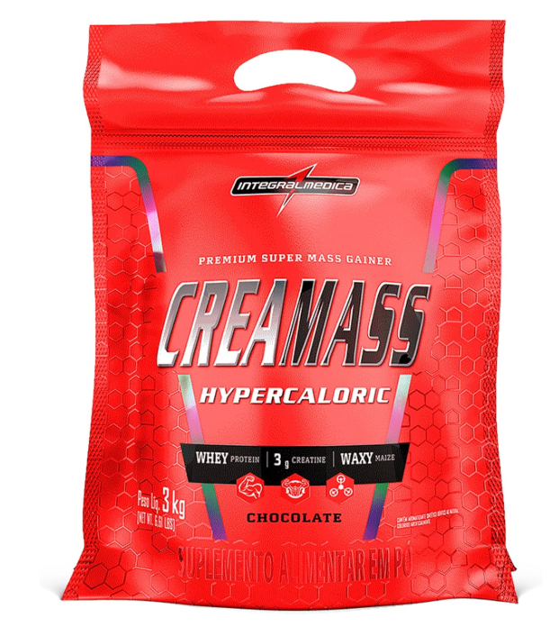

Let’s Gym Talk
Academia, ciência e motivação
Academia, ciência e motivação
Se seu objetivo é ganhar massa muscular e crescer na academia, você precisa entender um princípio: para construir músculo, o corpo precisa de energia e nutrientes suficientes.
É aí que entra o superávit calórico, uma estratégia muito usada em hipertrofia. Mas atenção: superávit não significa comer qualquer coisa.
Superávit calórico significa consumir mais calorias do que seu corpo gasta diariamente. Assim, seu organismo tem energia extra para construir tecidos, inclusive músculo.
Pode sim. O superávit ajuda a ganhar músculo, mas parte do ganho de peso pode ser gordura, principalmente se o superávit for muito alto.
O objetivo é fazer um superávit controlado, chamado de "lean bulk".
Um superávit comum e eficiente costuma ser entre 200 a 400 calorias por dia. Isso permite ganho muscular com menos acúmulo de gordura.
Para pessoas naturais, ganhar cerca de 0,25% a 0,5% do peso corporal por semana é uma meta saudável. Ganho muito rápido geralmente significa mais gordura.
O foco deve ser em alimentos com qualidade nutricional:
A proteína é essencial para hipertrofia. Muitos estudos indicam que 1,6g a 2,2g por kg é uma faixa eficiente.
Sim. Carboidrato é o principal combustível do treino pesado. Quando você tem energia, consegue treinar com mais intensidade, e isso gera mais hipertrofia.
Não necessariamente. O mais importante é o total de calorias e proteínas no dia. Porém, comer proteína ao longo do dia pode ajudar na síntese muscular.
Muita gente acha que superávit é comer fast-food todo dia. Isso pode gerar ganho de gordura e piorar saúde metabólica. O ideal é 80% dieta limpa e 20% flexível.
Superávit calórico é essencial para hipertrofia, mas precisa ser controlado. Com treino forte, proteína adequada e descanso, o ganho muscular será muito melhor.
⚠️ Este artigo é educativo e não substitui acompanhamento médico ou nutricional.
Leia também: Déficit calórico e Whey Protein.
Produtos que podem ajudar a bater proteínas e melhorar consistência.

Ajuda a atingir meta diária de calorias, em tempos de superavit-calorico. Sempre consultar um nutricionista antes de começar a tomar.
Qualidade: ⭐⭐⭐⭐⭐
Uso: Faço uso de acordo com a sua necessidade calórica.
Ver na Amazon
. Vitafor - Whey Fort 3W - 900g - Cookies n' Cream. Ajuda na recuperação muscular.
Qualidade: ⭐⭐⭐⭐⭐
Uso: 20g a 30g dependendo da necessidade.
Ver na Amazon